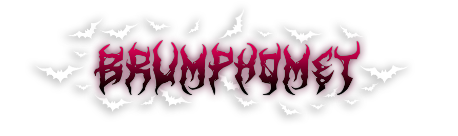

Projeto de UX/UI

Transmissões ao vivo
Do zero à monetização: Construção de uma comunidade
através de transmissões ao vivo na Twitch.

Visão geral
Neste estudo de caso, analiso o desenvolvimento de um overlay/template para o meu canal de livestreams (transmissões ao vivo) da Twitch, chamado “Brumphomet”, cujo nome deriva da junção de Brum + Baphomet, entidade ligada à alquimia e à renovação (girando em torno do tema “Solve et Coagula" = do latim “dissolver e coagular”, destruir para reconstruir - ou seja, trabalhando com constrastes). Para este template, foi preciso capturar a personalidade contrastante da streamer. A proposta partiu de uma ideia simples: fofinha e brutal ao mesmo tempo. Para representar esse contraste, utilizei principalmente o rosa e o preto, explorando a tensão entre uma estética delicada e outra mais agressiva.
Identidade:
Todos os detalhes do overlay foram pensados com base da personalidade da apresentadora da identidade da Live, desde os emojis, ícones utilizados, fundos de cenas, cores e contrastes temáticos.
Tipografia e cores
Em questão de tipografia, utilizei uma fonte gratuita para seguir a intenção de baixo investimento financeiro inicial. Para isto, durante as pesquisas, a fonte que melhor se encaixou no projeto foi a “ArtDystopia II”, por remeter a logotipos de bandas de black metal, com um visual desconectado e ramificado, lembrando chamas, rasgos, raízes e outros tipos de conceitos encontrados dentro da subcultura do gênero musical aqui abordado. Respeitando, claro, as cores escolhidas para o canal.
Referências:

Logo da banda "Dark Funeral"
Gênero: Black Metal

Logo da banda "Rotting Christ"
Gênero: Black Metal
Cores:
Telas de aviso da live:


Começando do zero
Soluções inteligentes
Como anteriormente dito, o orçamento inicial era zero. Não havia webcam ou microfone além do microfone integrado do headphone. A solução foi adaptar o celular como webcam, o que não é o ideal, mas era a solução que encontrada na época. Para isto, utilizei o software gratuito “Irium webcam”, até que atingisse retorno financeiro com as lives para que comprasse uma webcam de fato. Quando consegui a quantia necessária através de donates/doações e de pagamentos da plataforma, uma webcam e um microfone de melhor qualidade foram adquiridos. Investimento em um projeto é capaz de trazer ainda mais retorno não somente financeiro, mas também em questão de realização pessoal.


Apelo emocional: Nostalgia
Quadro musical: Rádio JBrum FM
A ideia inicial era fazer lives de games, mas seria interessante a possibilidade de realizar transmissões também sobre maquiagem e conversas informais na categoria “Just chatting”. Para as lives de conversa, decidi atrair o público através do fator nostalgia. E o que seria melhor de mexer com a emoção das pessoas do que a música?
JBrum FM - Quadro onde a Streamer (eu), que se apresenta sempre pelo sobrenome “Brum”, faz um trocadilho com o sobrenome e, ao mesmo tempo, uma alusão à JB FM, uma emissora de rádio brasileira sediada no Rio de Janeiro. Neste quadro são guiadas conversas com os espectadores enquanto são assistidos videoclipes e o público tem pedidos musicais atendidos, assim como geralmente é feito em rádios ou como era feito canais televisivos como a MTV e a TVZ.
Também desenvolvi uma logo similar à original para trazer a sensação de nostalgia aos inscritos do canal e homenagear a radio JB FM, fazendo uma brincadeira bem-humorada, como se eu fosse radialista.

Logo da Rádio original
de referência: JB FM

Logo da Rádio fictícia
JBrum FM
Estrutura da Scene no Overlay - Streamlabs

Configurações
Organização
Procuro nomear as camadas de acordo com as funções das mesmas para me guiar com precisão sempre que precisar fazer modificações, tanto em questão de pastas quanto em questão de camadas. Também aplico filtros de som e imagem de acordo com a necessidade de cada caso (hardwares e dispositivos - microfones, câmeras, etc).


Monitoramento
Apesar de haver regras explícitas no chat sendo exibidas ao clicar antes dos usuários enviarem mensagens, é preciso que haja um monitoramento. Utilizo o Nighbot que envia mensagens de tempos em tempos lembrando às pessoas das regras de boa convivência e também há moderadores do chat (pessoas de confiança com poderes de excluir mensagens, banir usuários, bloquear pessoas, etc).
O monitoramento da transmissão em si também acontece por responsabilidade da streamer, enquanto transmite, em um segundo monitor, através do próprio Streamlabs e também através do navegador, com um plug-in de carregamento automático a cada X segundos, para evitar que o Streamlabs “deixe passar” mensagens dos espectadores sem querer, fucionando como uma “prova real”, tendo assim, 2 fontes de monitoramento do chat e da transmissão. O carinho e a atenção aos detalhes é o diferencial que fideliza as pessoas.
Retorno financeiro e investimento
Mostrando na prática os investimentos feitos com o retorno financeiro:
Nesta seção, vamos acompanhar um pouco da evolução inicial da live em questão de dispositivos físicos. Aqui estão alguns dos resultados:


A organização dos instrumentos físicos também se mostra importante em qualquer tipo de operação, não somente em transmissões ao vivo. Para organizar as cenas da live utilizei um Stream Deck (comprado com o retorno financeiro gerado pelo engajamento dos espectadores da live) e configurei com um software da própria marca do equipamento. Criei no Streamlabs todas as “cenas” (telas) que eu precisava para interagir com os espectadores da forma que eu gostaria inicialmente e, conforme foi surgindo a necessidade ao longo das transmissões, fui criando as demais cenas para surprir a demanda da interatividade que eu gostaria de ter com as pessoas que assistiam às lives.
Por exemplo, para o “quadro” JBrum FM, configurei vinhetas já prontas de internet e outras eu mesma gravei com a minha voz, assim como as tradicionais vinhetas de estações rádios para trazer a sensação de nostalgia, mesmo que as pessoas estivessem assistindo uma transmissão em vídeo pela internet ao invés de estarem ouvindo um rádio AM/FM.
Para poder me conectar um pouco mais eficientemente com o público, também configurei alguns memes atemporais e outros um pouco mais contemporâneos para soltar esporadicamente durante as transmissões, em oposição de apenas me expressar com palavras. Memes geram um elevado grau de identificação e foram muito bem recebidos pelos inscritos.
Da mesma forma que posso usar estes memes em formato de som, os espectadores também podem. Porém, para isto, precisam resgatar pontos de recompensa. Estes pontos são resgatados ao assistir as lives e são uma usabilidade da própria plataforma (Twitch) escolhida por mim para realizar as transmissões. Fiz questão de disponibilizar todos os sons que uso e alguns outros extras exclusivos dos espectadores, hospedar em uma plataforma própria para estes arquivos, editar as partes que interessavam para um tamanho/tempo que não atrapalhasse o andamento da transmissão, mas que marcasse a conversa de alguma forma e, ainda assim, estimulasse as pessoas a assistir a live para coletar os pontos e resgatar estas recompensas para interagir.


Interatividade e engajamento
Integração com ferramentas
Da mesma forma que posso usar memes em formato de som tocados diretamente do computador e acionados do Streamdeck, os espectadores também podem resgatar sons durante a live. Porém, para isto, precisam resgatar pontos de recompensa. Estes pontos são resgatados ao assistir as lives e são uma usabilidade da própria plataforma (Twitch) escolhida por mim para realizar as transmissões. Fiz questão de disponibilizar todos os sons que uso e alguns outros extras exclusivos dos espectadores, hospedar em uma plataforma própria para estes arquivos, editar as partes que interessavam para um tamanho/tempo que não atrapalhasse o andamento da transmissão, mas que marcasse a conversa de alguma forma e, ainda assim, estimulasse as pessoas a assistir a live para coletar os pontos e resgatar estas recompensas para interagir.
Para trazer o máximo de interatividade para a transmissão ao vivo, utilizei ferramentas integradas como Tryggerfire, StreamElements, Nighbot, Stream-CC, entre outros.

• Triggerfyre (Tryggerfire): Gerencia alertas interativos de som e vídeo na tela. Permite que os espectadores ativem memes, clipes de áudio ou animações diretamente no seu streaming usando pontos do canal da Twitch ou comandos de chat, aumentando muito o engajamento direto.
• StreamElements: Funciona como uma plataforma tudo-em-um para streamers. Cuida do gerenciamento de sobreposições (overlays) na nuvem, bots de chat, alertas de novos seguidores/subscrições, além de oferecer sistemas de fidelidade (pontos da loja do canal) e páginas de doação.
• Nightbot: Atua como um moderador automático e utilitário de chat. É focado em automatizar tarefas no chat, como responder a perguntas frequentes com comandos personalizados (ex: !redes), filtrar palavras ofensivas, evitar spam e gerenciar sorteios ou pedidos de música.
• Stream-CC: Fornece legendas ocultas automáticas e em tempo real (Closed Captions) para a sua transmissão. Ele transcreve a sua voz enquanto você fala, ajudando na acessibilidade para pessoas com deficiência auditiva ou para quem assiste à live sem áudio.
Estratégias de engajamento
Com o passar do tempo, comecei a fazer transmissões de um jogo chamado muito famoso e premiado chamado “Baldur’s Gate 3”, um RPG (Role-playing game), que permite integração com a Twitch. Desta forma, os espectadores conseguem passar o mouse por cima do meu vídeo em seus navegadores e visualizar várias informações de meus personagens durante o jogo, como a ficha, o inventário, as condições, as missões, dentre outros, além de disponibilizar enquetes durante os diálogos.